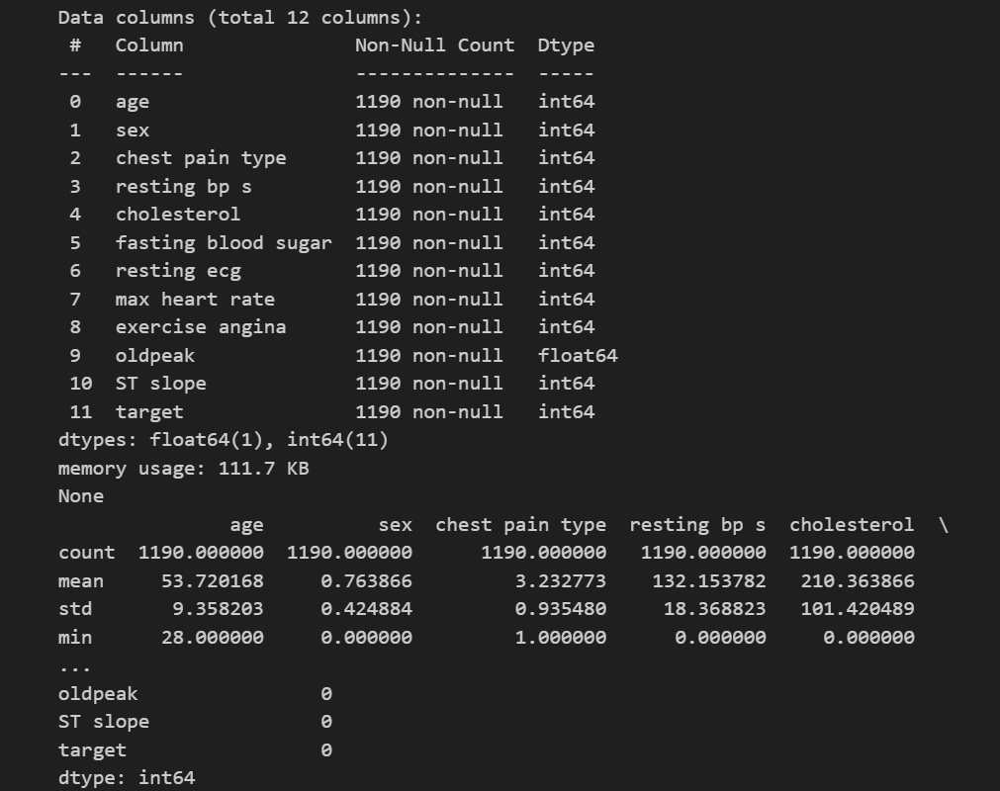
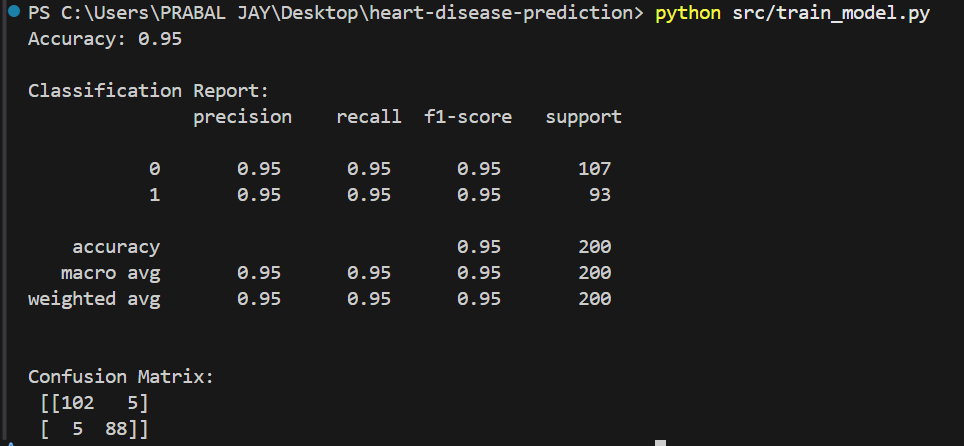
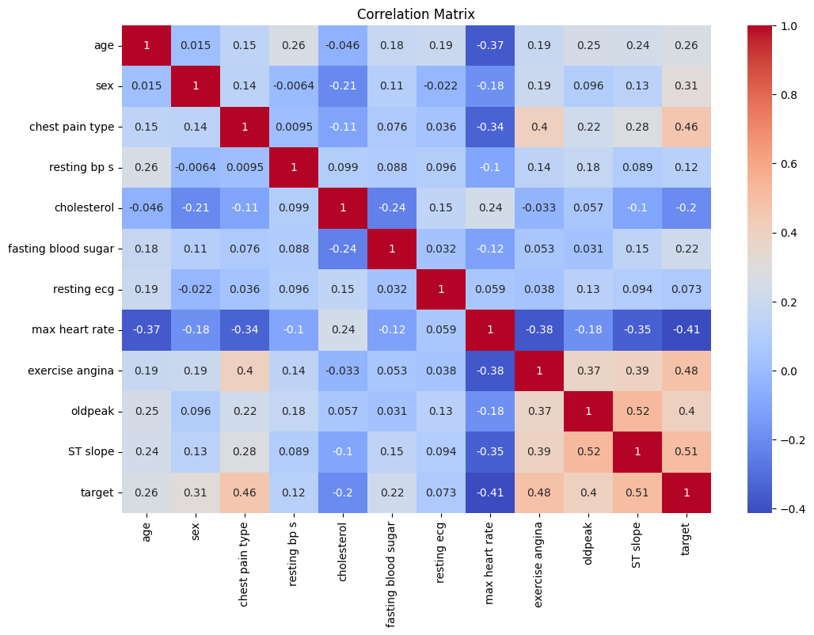
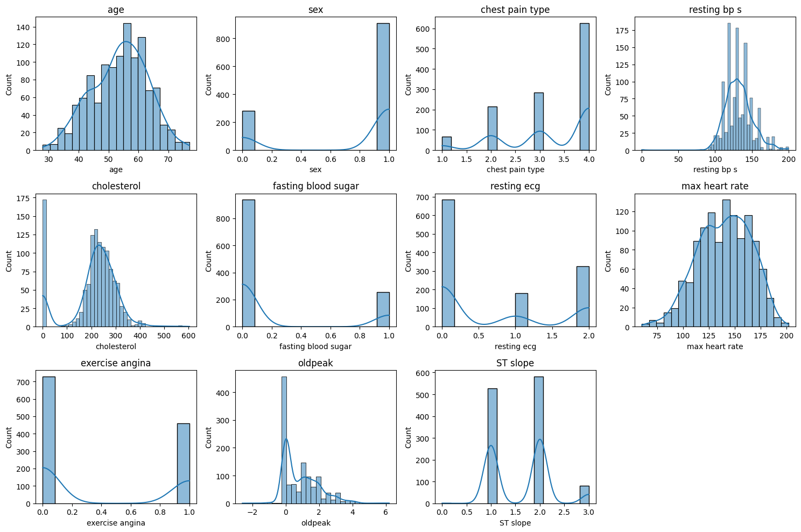
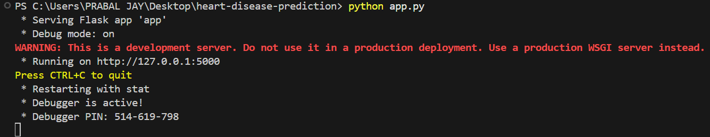
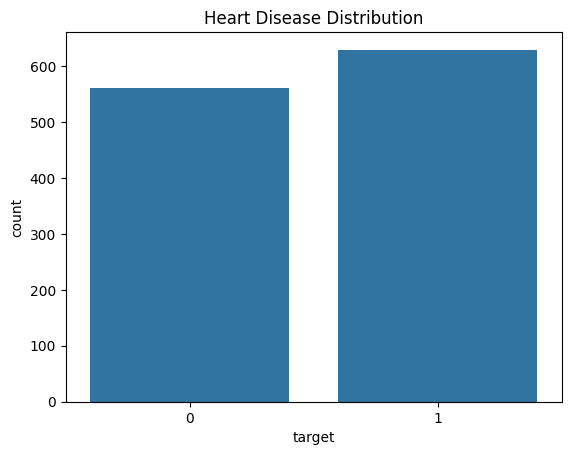

❤️ Heart Disease Prediction
A modern web application that predicts the likelihood of heart disease using machine learning.
Built with Flask, scikit-learn, and a visually appealing, responsive interface.
🚀 Features
- 🖥️ Interactive Web App: User-friendly form for inputting patient data.
- 🤖 Machine Learning Model: Trained on real-world heart disease data.
- 📊 Data Visualization: Explore the dataset with insightful charts.
- 🎨 Attractive UI: Modern, responsive, and easy to use.
- 🔄 Customizable: Easily retrain or update the model with new data.
🎬 Demo Video
📸 Output Gallery
 Final App
Final App

Data Exploration

Model Training

Confusion Matrix

Output Example

App Screenshot

Heart Disease Distribution
📂 Project Structure
heart-disease-prediction
│
├── app.py # Main entry point of the Flask application
├── requirements.txt # Lists the dependencies required for the project
├── src
│ ├── data_preprocessing.py # Functions for data preprocessing
│ └── train_model.py # Logic for training the machine learning model
├── data
│ ├── raw
│ │ └── dataset.csv # Raw dataset used for training the model
│ └── processed
│ ├── X_train.csv # Processed training features
│ ├── X_test.csv # Processed testing features
│ ├── y_train.csv # Processed training labels
│ └── y_test.csv # Processed testing labels
├── images/ # Outputs
│ ├── app.png
│ ├── final_app.png
│ ├── data.png
│ ├── train_model.png
│ ├── cm.png
│ ├── output.png
│ └── hdd.png
├── models
│ └── best_model.pkl # Trained machine learning model
├── templates
│ └── index.html # HTML template for the web application's home page
├── notebooks
│ └── data_exploration.ipynb # Notebook for exploratory data analysis
└── README.md # Documentation for the project
⚙️ Installation
- Clone the repository:
git clone https://github.com/PrabalJay/heart-disease-prediction.git cd heart-disease-prediction
- Install dependencies:
pip install -r requirements.txt
- Prepare the data:
- Place your dataset in
data/raw/dataset.csv. - Run preprocessing and training scripts:
python src/data_preprocessing.py python src/train_model.py
- Place your dataset in
- Run the app:
python app.py
Visit http://127.0.0.1:5000 in your browser.
📝 Usage
- Fill in the form with patient details.
- Click Predict to see the result.
- Explore data visualizations in the
notebooks/folder.
📊 Model
- Algorithm: Random Forest Classifier
- Features: Age, Sex, Chest Pain Type, Blood Pressure, Cholesterol, etc.
- Evaluation: Accuracy, Confusion Matrix, Classification Report
🤝 Contributing
Pull requests are welcome! For major changes, please open an issue first.
📄 License
This project is licensed under the MIT License.
🙏 Acknowledgements
⭐ Star this repo if you found it useful!